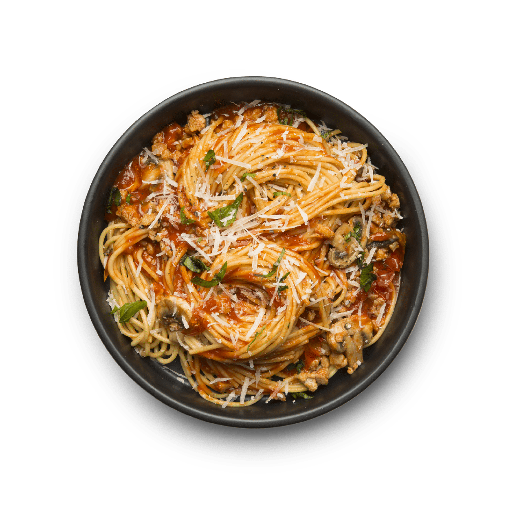

Spaghetti

Photo credit: pngimg.comunder a Creative Commons license.
Introduction
Spaghetti is a classic Italian dish that brings comfort and joy to the table. Whether it's a family dinner or a special occasion, or another hard day of working at the docks has come to an end, this dish never fails to impress. Let's dive in.
Okay, let's get this started. Grab your apron and let's cook up some spaghetti.
Ingredients
- 200g spaghetti
- 2 tablespoons olive oil
- 2 cloves garlic, minced
- 400g canned tomatoes, crushed
- Salt and pepper to taste
- Fresh basil leaves (for garnish)
- Grated Parmesan cheese (optional)
Instructions
- Cook the spaghetti according to package instructions until al dente. Drain and set aside.
- In a large skillet, heat olive oil over medium heat. Add minced garlic and sauté for about 1 minute until fragrant.
- Add the crushed tomatoes to the skillet. Season with salt and pepper. Let it simmer for about 10 minutes, stirring occasionally.
- Add the cooked spaghetti to the sauce and toss to coat evenly.
- Serve hot, garnished with fresh basil leaves and grated Parmesan cheese if desired.
Back to Recipes